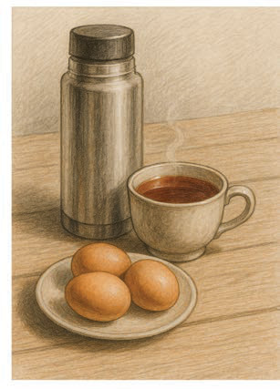
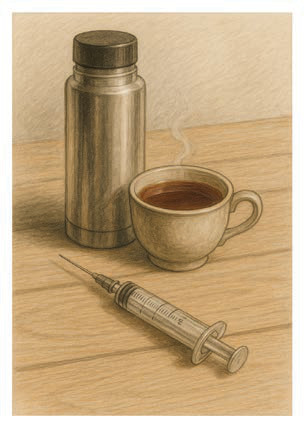

Images with unity
Unity in drawing refers to the condition in which the elements portrayed appear to be related or connected. Unity helps the viewer to understand the message or emotion intended by the artist. To create a unified drawing, it is essential to consider the relationship between the elements within the artwork. Figure 27 shows the image with related objects to one another. In contrast, Figure 28 lacks unity because the objects in the image lack a clear relationship.



Activity 16
Use a pencil and paper to make a drawing of any objects found in your school or home environment by considering unity.
Activity 17
Use a pencil and paper to make a drawing of any objects found in your school or home environment that demonstrate a lack of unity.